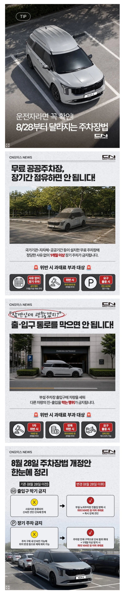

https://bbs.ruliweb.com/best/board/300143/read/76468853

https://bbs.ruliweb.com/best/board/300143/read/76468853

1개월 100만원이면 한달마다 옮기면 되네. 저걸로 단속이 되나
최소한 누구찬지 명시는 가능할듯?
ㄹㅇ 27일마다 옮겨다니면 된다는 소리가 되버림
이게 법의 맹점임. 선을 긋는 순간 선타기를 하게되거든.
견인 중 발생하는 차량 파손은 견인자가 책임지지 않는다는 조항도 넣어야함.
29일에 하루 빼는 얌체족을 잡는게 목적이 아님. 방치돼서 썩어가는 차들 못치우던거 치울 수 있게 되는거고 개양아치 중고차팔이새끼들이 무료 공공주차장을 마치 자기 중고차매장처럼 쓰고 있는거 잡을수 있게 된거
당연한거를 강제해야 되는 것 자체가
우리 사회의 수준이 얼마나 형편없어 진 것인지를 보여주네
이제 저걸로 지랄하는 새끼들 인스타에 한트럭 나올예정
한달이나 봐줘? 1주로 줄이지
이중주차해놓고 전화안받는새끼애미죽이는법안은없냐?
카니발에 저거 CN 마크 뭐야? CHINA?
카니발 특장회사
오 벤츠 -> 브라부스 이런느낌인가
그냥 하이 리무진 개조(뚜껑) 회사야
개정한것도 존나 어처구니없을 정도의 솜방망이 같은데 그나마 처벌 하것나
얼마나 안 지키면 법으로 강제하냐
출입구는 천만원 때려야지 개정신병자인데ㅋㅋㅋ
차 값이 천만원 안해...
얼마나 상식에 없는 짓을 하길래ㅋㅋ 출입구에 주차한건 때려부숴도 합법이어야 함.
장기주차 진짜 시발 ㅋㅋㅋㅋㅋ
어딜가든 xx은 있어서 만들어야지 어쩔수 있나
주차장 출입구 막자해도 어쩔 도리가 없었던게 레전드임 ㅋㅋㅋ
주차장 입구막기 하면
걍 부실 수 있게 해줘 제발
신고를 어떻게 하냐 가끔 가는 상가 지하주차장에 주차해두고 밤에 나오려고 하면 입구 쳐막은 새끼 종종보여서 앞으로 신고 제대로 해줘야겠음
양심이랑 뇌랑 생각이랑 있는 사람은 몰라도 되는 법이네 ㅋㅋㅋ 실수로도 어길수가 없는 법임 ㅋㅋㅋ
근데 저 1달이란걸 어떻게 측정할거야?
중간에 자리를 옮긴다던가 밖에 잠간 갔다오면 1달동안 세워놓은거 아니라고 떠들수도 있잖아
그럼 29일 채우면 되는거네?
한달 공짜 주차장 메모...
아아 이것은 상식이라는 것이다
대가리가 술쳐먹을 생각밖에 없는 개병신새끼였으니까